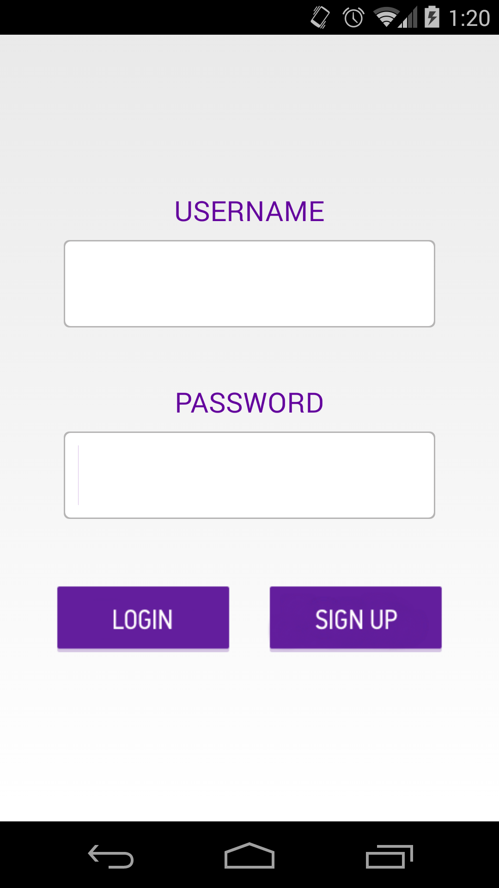
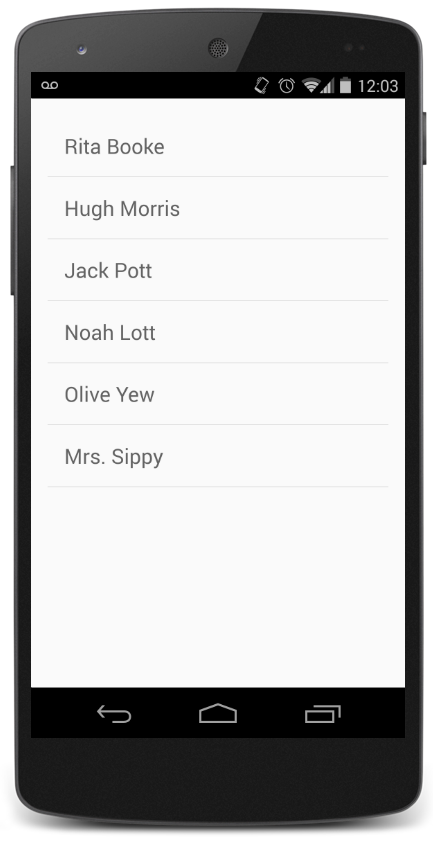
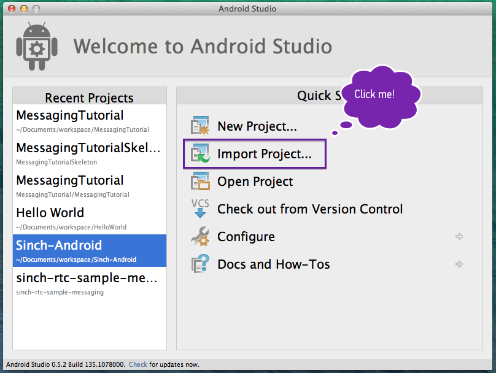
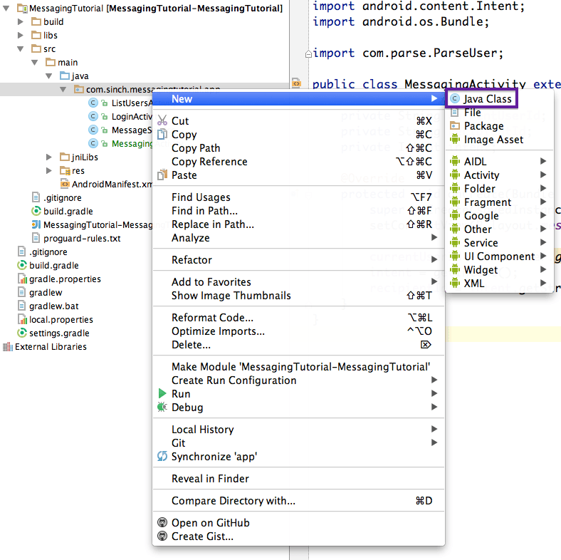
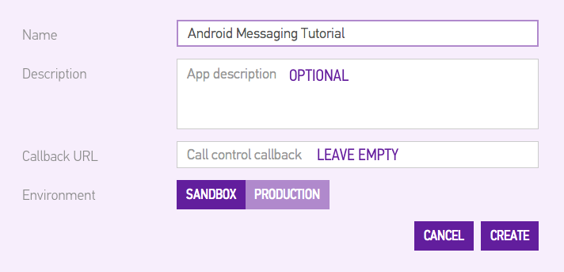
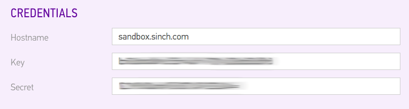
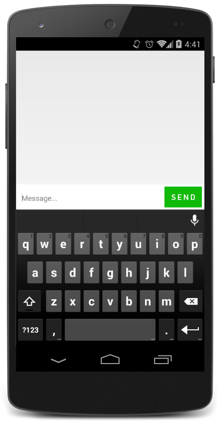
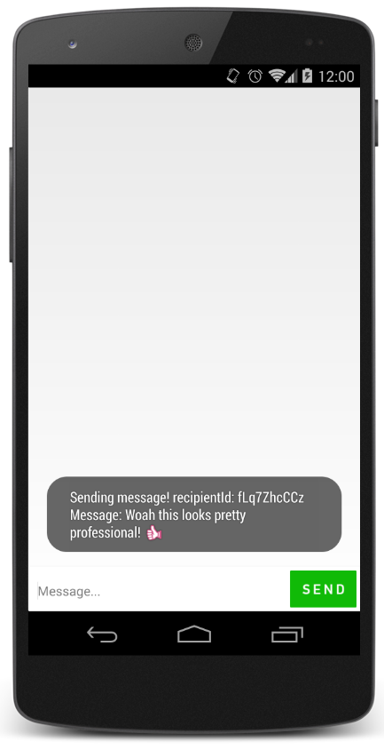
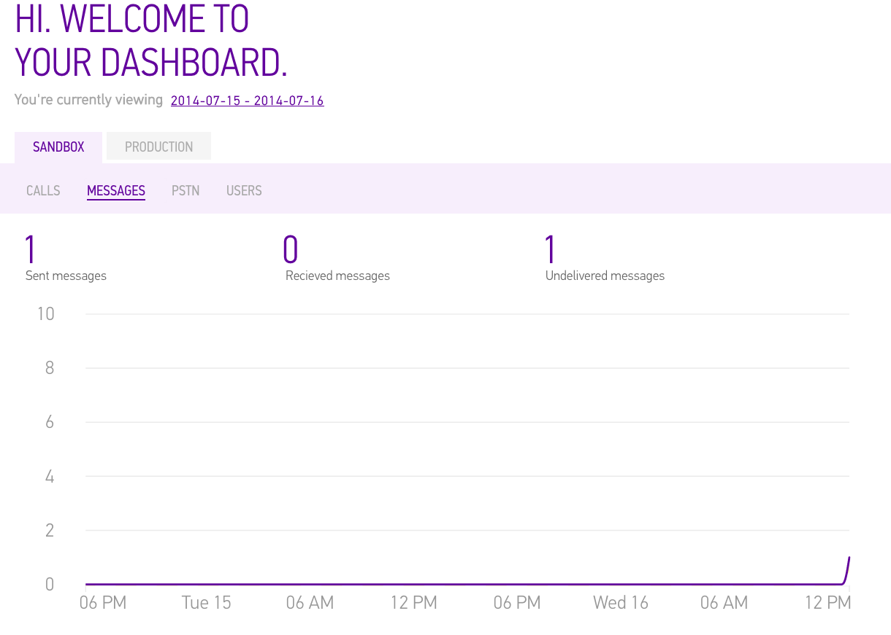
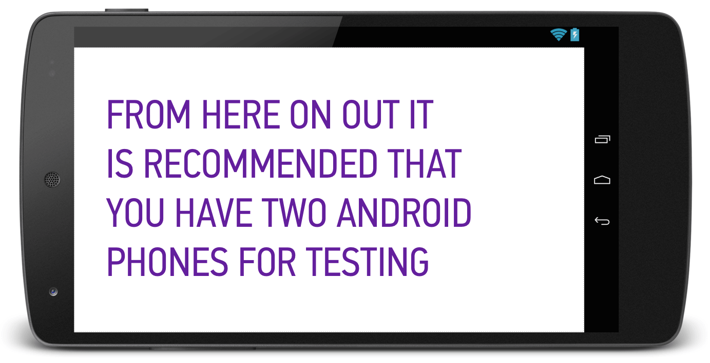

This tutorial will guide you through building a fully functional instant messaging application using the Sinch Android SDK. By the end of this tutorial, your app will allow users to sign up and log in, see a list of all users, and instant message with any user. Your app will look similar to this:
 
If you get stuck at any point, the completed source code for this tutorial is available on our Github.
To get the ball rolling, we've created a skeleton project that you can clone from this Github repository. Once you've cloned the project, you will need to import it into Android Studio and make sure everything is working properly.
The skeleton project will save you from creating a new project in Android Studios, and includes: a basic login activity, a login layout, a messaging conversation layout, and some graphics to make things look nice! Go ahead and run the skeleton project now to make sure everything is working properly.
We are going to use a service called Parse to keep track of our users. Parse will allow us to securely log in our users, and save user data, without having our own servers. Sign up for an account here.
Then, follow this link to create a new app. (The name of your app is not important.) Take note of your Application ID and Client Key.
At this point, you need to download the Parse SDK and extract the contents into your libs folder. Parse will walk you through how to set this up. After you've added it to your libs folder, in Android Studio, navigate to the .jar file in your libs directory, right-click, and select "Add as Library."
Parse requires internet and access to the network state. To grant these permissions, in AndroidManifest.xml, add the following permissions above the <application> tag:
<uses-permission android:name="android.permission.INTERNET" /> <uses-permission android:name="android.permission.ACCESS_NETWORK_STATE" />
Now, we need to initialize Parse every time our user opens the app. Therefore, it makes sense to initialize Parse in the onCreate method of our LoginActivity. Add the following line of code, and replace the placeholders with the application id and client key you got from Parse.
Parse.initialize(this, "ApplicationID", "ClientKey");
In addition, add com.parse.Parse as an import in LoginActivity.java,
import com.parse.Parse;
This is a good spot to take a break and run your app. You won't see any visual differences, but its good to make sure that nothing is broken before we move on!
Let's take care of the "login" and "sign up" buttons now. First, declare the two buttons inside LoginActivity.
private Button signUpButton; private Button loginButton;
(You will also need to import android.widget.Button)
Now, we can define the login and signup buttons and set up an onClickListener for each of the buttons. Add the following code at the end of your onCreate method in LoginActivity.java. For the time being, a short toast message will appear when you click either of the buttons.
loginButton = (Button) findViewById(R.id.loginButton);
signUpButton = (Button) findViewById(R.id.signupButton);
loginButton.setOnClickListener(new View.OnClickListener() {
@Override
public void onClick(View view) {
Toast.makeText(getApplicationContext(), "Login",
Toast.LENGTH_SHORT).show();
}
});
signUpButton.setOnClickListener(new View.OnClickListener() {
@Override
public void onClick(View view) {
Toast.makeText(getApplicationContext(), "Sign Up",
Toast.LENGTH_SHORT).show();
}
});
(Also import android.widget.Toast and android.view.View)
Time to run the app! This time when you run it, try clicking both of the buttons to make sure the correct toast messages appear.
Let's get started on implementing logic into those button clicks. First, we need to store what the user typed into the username and password fields. Declare the username and password fields, as well as variables to store their values in.
private EditText usernameField; private EditText passwordField; private String username; private String password;
And inside the onCreate method, use the ids from activity_login.xml to define the EditText fields. Put the code before the onClick methods.
usernameField = (EditText) findViewById(R.id.loginUsername); passwordField = (EditText) findViewById(R.id.loginPassword);
Note: From now on, I will not specify all of the classes you need to import. Android Studio will suggest imports for you, and instruct you on how to add them.
We will use the Parse method logInInBackground to securely log our users in. We just need to grab the text typed in the username and password fields, and pass it to this method, and display a toast message if Parse throws an exception. The following code belongs in your loginButton onClickListener.
username = usernameField.getText().toString();
password = passwordField.getText().toString();
ParseUser.logInInBackground(username, password, new LogInCallback() {
public void done(ParseUser user, ParseException e) {
if (user != null) {
//start new activity
} else {
Toast.makeText(getApplicationContext(),
"Wrong username/password combo",
Toast.LENGTH_LONG).show();
}
}
});
For new users that want to sign up, we use the Parse method signUpInBackgroud. Again, we grab the text typed in the username and password fields, create a new ParseUser, sign the user up, and then display a toast message if Parse throws an error. Put this code in your signUpButton onClickListener.
username = usernameField.getText().toString();
password = passwordField.getText().toString();
ParseUser user = new ParseUser();
user.setUsername(username);
user.setPassword(password);
user.signUpInBackground(new SignUpCallback() {
public void done(ParseException e) {
if (e == null) {
//start new activity
} else {
Toast.makeText(getApplicationContext(),
"There was an error signing up."
, Toast.LENGTH_LONG).show();
}
}
});
Things are about to get exciting! You can now run your app and sign up your first user. After you click the sign up button, head over to the Parse website to make sure that everything worked. Go to https://www.parse.com/apps/yourapp/collections where "yourapp" is the name of your app, and navigate to the data browser. You should see one entry in your database with the username you just typed in!
One last login-related bit of code that we'll add is to check to see if a user is already logged in when the app is launched. If a user is already logged in, we don't even want to load the layout, so put this code above the setContentView method.
ParseUser currentUser = ParseUser.getCurrentUser();
if (currentUser != null) {
//start new activity
}
You now have three different spots in this onCreate method where we need to start the next activity. This would probably be a good time to create that new activity! The next activity that users will go to is a list of all users using the app. It will look like this when we're done:
To create our new activity, follow the steps on the screenshot below.
We will name this class ListUsersActivity, since it will show a list of all users.
You'll also need to add ListUsersActivity to AndroidManifest.xml:
<activity
android:name=".ListUsersActivity"
android:label="@string/title_activity_list_users" >
</activity>
The last bit of housekeeping before we use our new activity is to delete the boilerplate code that we won't be using. In ListUsersActivity.java, there are three methods: onCreate, onCreateOptionsMenu, and onOptionsItemSelected. We will only use onCreate, so just delete the other two. And lastly, change ListUsersActivity to extend Activity, not ActionBarActivity.
public class ListUsersActivity extends Activity
Let's head back to LoginActivity.java now. In all three places where we have left a "start new activity" comment, you will want to add the following code. This defines a new intent, and then starts the list users activity.
Intent intent = new Intent(getApplicationContext(), ListUsersActivity.class); startActivity(intent);
Take a moment here to run your app and verify that your intent works in all three scenarios (already logged in, log in, sign up). Since we don't have a log out button, uninstall the app if you want to log out. ListUsersActivity should look like this right now:
This would be a good time to head time to your Parse data browser and manually add a few test users to populate our list.
We want activity_list_users.xml to be a ListView, so replace the code currently in there with this:
<ListView xmlns:android="http://schemas.android.com/apk/res/android"
xmlns:tools="http://schemas.android.com/tools"
android:layout_width="match_parent"
android:layout_height="match_parent"
android:padding="16dp"
tools:context="com.sinch.messagingtutorial.app.ListUsersActivity"
android:background="@color/off_white"
android:id="@+id/usersListView">
</ListView>
We also need to create an xml file to tell our app how to display each item of the list. In the layout directory, create a new file and name it user_list_item.xml. It will contain only the following text view:
<?xml version="1.0" encoding="utf-8"?>
<TextView xmlns:android="http://schemas.android.com/apk/res/android"
android:id="@+id/userListItem"
android:textColor="@color/very_dark_gray"
android:padding="16dp"
android:layout_width="fill_parent"
android:layout_height="fill_parent"
android:textSize="20sp" />
Moving back to ListUsersActivity.java, we are going to add just one line of code to the end of our onCreate method:
setConversationsList();
Now, let's define setConversationsList:
private void setConversationsList() {
currentUserId = ParseUser.getCurrentUser().getObjectId();
names = new ArrayList<String>();
ParseQuery<ParseUser> query = ParseUser.getQuery();
query.whereNotEqualTo("objectId", currentUserId);
query.findInBackground(new FindCallback<ParseUse>>() {
public void done(List<ParseUser> userList, ParseException e) {
if (e == null) {
for (int i=0; i<userList.size(); i++) {
names.add(userList.get(i).getUsername().toString());
}
usersListView = (ListView)findViewById(R.id.usersListView);
namesArrayAdapter =
new ArrayAdapter<String>(getApplicationContext(),
R.layout.user_list_item, names);
usersListView.setAdapter(namesArrayAdapter);
} else {
Toast.makeText(getApplicationContext(),
"Error loading user list",
Toast.LENGTH_LONG).show();
}
}
});
}
Whew - there's a lot going on in that method. Let's make sure we're all on the same page. First, we store the current user's id, and create an empty array of strings (for the user names). Then, we query our Parse database for all users that are not the current user (since it would be silly to chat with yourself!) Once we have a list of ParseUsers, we use a for loop to go through and store their name as a string. Finally, we define the list view and adapter, and tell our app that nameArrayAdapter should be used to populate usersListView. If Parse returns an error, we will show a toast message to our user.
And, if you didn't already declare the variables from setConversationsList, here's quick copy and paste code:
private String currentUserId; private ArrayAdapternamesArrayAdapter; private ArrayList names; private ListView usersListView;
Now, we are going to make the list of users clickable. If you click on the name of a user, we want it to open a private instant messaging conversation with them.
To make the list clickable, we are going to use the method setOnItemClickListener. For now, we will just display a toast message when an item is clicked. We'll go back in a few minutes and add the logic to open a conversation. Add the following block of code in setConversationsList, after populating the list, only if populating the list succeeds:
usersListView.setOnItemClickListener(new AdapterView.OnItemClickListener() {
@Override
public void onItemClick(AdapterView a, View v, int i, long l) {
Toast.makeText(getApplicationContext(),
"You clicked on user: " + i,
Toast.LENGTH_SHORT).show();
//Look up user id & open conversation
}
});
Run your app and click on a few different names to make sure that the correct toast message is displayed.
In this section, I will walk you creating an app on the Sinch dashboard, downloading the Sinch SDK, and starting the message service when a user logs in.
Start by heading over to the Sinch dashboard. If you don't yet have an account, you will be prompted to sign up. In the top right corner of the page, there is a 'Create new app' button; click this. Name your app anything you want, and leave the rest blank.
Next, you will need to download the latest SDK for Android from here: www.sinch.com/downloads
Once it has finished downloading, unpack the zip file and open the libs folder. Copy the two .jar files to your libs directory, highlight them both, right click, and choose 'add as library.' Then, create a new folder under src/main named jniLibs. Move the armeabi and armeabi-v7a folders into jniLibs.
Now, create a new class named MessageService. This class will be in charge of starting and stopping the Sinch client. I'm about to give you a whole lot of copy and paste code to put in MessageService.java. I explain the important methods in the comments:
public class MessageService extends Service implements SinchClientListener {
//App key and app secret are in your Sinch dashboard
//Explanatory screenshot below
private static final String APP_KEY = "YOUR_APP_KEY";
private static final String APP_SECRET = "YOUR_APP_SECRET";
private static final String ENVIRONMENT = "sandbox.sinch.com";
private final MessageServiceInterface serviceInterface =
new MessageServiceInterface();
private SinchClient sinchClient = null;
private MessageClient messageClient = null;
private String currentUserId;
//Gets called when we start the service from LoginActivity
@Override
public int onStartCommand(Intent intent, int flags, int startId) {
//Get the current user id
currentUserId = ParseUser.getCurrentUser().getObjectId().toString();
if (currentUserId != null && !isSinchClientStarted()) {
startSinchClient(currentUserId);
}
return super.onStartCommand(intent, flags, startId);
}
//Start the Sinch client
public void startSinchClient(String userName) {
//Build the Sinch client with the current user id,
//app key, app secret, and environment host
sinchClient = Sinch.getSinchClientBuilder()
.context(this)
.userId(userName)
.applicationKey(APP_KEY)
.applicationSecret(APP_SECRET)
.environmentHost(ENVIRONMENT)
.build();
sinchClient.addSinchClientListener(this);
//This line is necessary to have messaging in our app!
sinchClient.setSupportMessaging(true);
sinchClient.setSupportActiveConnectionInBackground(true);
sinchClient.checkManifest();
sinchClient.start();
}
//To check if the Sinch client is already started
private boolean isSinchClientStarted() {
return sinchClient != null && sinchClient.isStarted();
}
//Do you want your app to do something if starting the client fails?
@Override
public void onClientFailed(SinchClient client, SinchError error) {
sinchClient = null;
}
//Do you want your app to do something when the sinch client starts?
@Override
public void onClientStarted(SinchClient client) {
client.startListeningOnActiveConnection();
messageClient = client.getMessageClient();
}
//Do you want your app to do something when the sinch client stops?
@Override
public void onClientStopped(SinchClient client) {
sinchClient = null;
}
//Pretty self explanitory - stop the Sinch client
public void stop() {
if (isSinchClientStarted()) {
sinchClient.stop();
sinchClient.removeSinchClientListener(this);
}
sinchClient = null;
}
//Called when we bind this to an activity (we'll get there soon)
@Override
public IBinder onBind(Intent intent) {
return serviceInterface;
}
@Override
public boolean onUnbind(Intent intent) {
stop();
stopSelf();
return super.onUnbind(intent);
}
@Override
public void onDestroy() {
stop();
super.onDestroy();
}
@Override
public void onLogMessage(int level, String area, String message) {
//Intentionally left blank. You will get errors if you
//try to remove this method.
}
@Override
public void onRegistrationCredentialsRequired(SinchClient client,
ClientRegistration clientRegistration) {
//Intentionally left blank. You will get errors if you
//try to remove this method.
}
public void sendMessage(String recipientUserId, String textBody) {
if (messageClient != null) {
WritableMessage message =
new WritableMessage(recipientUserId, textBody);
messageClient.send(message);
}
}
public void addMessageClientListener(MessageClientListener listener) {
if (messageClient != null) {
messageClient.addMessageClientListener(listener);
}
}
public void removeMessageClientListener(MessageClientListener listener) {
if (messageClient != null) {
messageClient.removeMessageClientListener(listener);
}
}
public class MessageServiceInterface extends Binder {
public void sendMessage(String recipientUserId, String textBody) {
MessageService.this.sendMessage(recipientUserId, textBody);
}
public void addMessageClientListener(MessageClientListener listener) {
MessageService.this.addMessageClientListener(listener);
}
public void removeMessageClientListener(MessageClientListener listener) {
MessageService.this.removeMessageClientListener(listener);
}
}
}
This is what it will look like when you get your app key and app secret from the Sinch dashboard:
Next, declare MessageService in your AndroidManifest.xml. Put this line inside the <application> tag:
<service android:name=".MessageService"></service>
Now, we are going to start the service from LoginActivity. In the three possible places to start ListUsersActivity, we want to also start the message service. (Refresher - these three places are if a user is already logged in, if they log in, or if they sign up.) It should now look like so:
Intent serviceIntent = new Intent(getApplicationContext(),
ListUsersActivity.class);
startService(serviceIntent);
Intent intent = new Intent(getApplicationContext(), ListUsersActivity.class)
startActivity(intent);
You'll notice that this code is quite repetitive. In the finished project, I have refactored this code to reduce repitition, but it is not necessary for your app to work. If you want to do what I did, declare intent and serviceIntent inside loginActivity:
private Intent intent; private Intent serviceIntent;
Then, define the variables in onCreate:
intent = new Intent(getApplicationContext(),
ListUsersActivity.class);
serviceIntent = new Intent(LoginActivity.this, MessageService.class);
Lastly, change the code in those original three places to be just this:
startService(serviceIntent); startActivity(intent);
At this point, you can run your app and the service will start. It might be helpful to add some debugging output in onStartCommand to make sure that it is actually getting called.
In this section, we are going to create and implement the messaging activity. You will end up with a screen that looks like this:
(screenshot of messaging conversation)
I'll remind you that the layouts and graphics to create this view are already included in your skeleton project.
To create MessagingActivity, right click on the folder with your package name, and select 'New' --> 'Java Class'
To start, write a basic onCreate method that will load the messaging layout (included in skeleton project).
public class MessagingActivity extends Activity {
@Override
protected void onCreate(Bundle savedInstanceState) {
super.onCreate(savedInstanceState);
setContentView(R.layout.messaging);
}
}
Don't forget to declare MessagingActivity in your manifest!
<activity android:name=".MessagingActivity"></activity>
Now we can go back to ListUsersActivity and fill-in the logic to open a conversation with the user that was clicked on. We left a note for ourselves that says "Look up user id and open conversation." In place of that comment, call a new method that we're going to call openConversation, and pass in the array of names and position that was clicked.
openConversation(names, i)
And define the method:
public void openConversation(ArrayListnames, int pos) { //This method takes an array of the names from the list, //and the integer of what position was clicked }
We will use a parse query to look up the user id based on the username we have. The following code will get the username that was clicked on, and then look up which ParseUser has that username. If it returns with no errors, we will (just for now) display a toast message with the username and user id.
ParseQuery<ParseUser> query = ParseUser.getQuery();
query.whereEqualTo("username", names.get(pos));
query.findInBackground(new FindCallback() {
public void done(List user, ParseException e) {
if (e == null) {
Toast.makeText(getApplicationContext(),
"username: " + user.get(0).getUsername() +
", user id: " + user.get(0).getObjectId(),
Toast.LENGTH_SHORT).show();
} else {
Toast.makeText(getApplicationContext(),
"Error finding that user",
Toast.LENGTH_SHORT).show();
}
}
});
Run your app and try clicking on names to make sure everything is working properly.
Now, let's start MessagingActivity and pass along the id of who we want to message with. Put the following in place of the temporary toast message from above:
Intent intent = new Intent(getApplicationContext(), MessagingActivity.class);
intent.putExtra("RECIPIENT_ID", user.get(0).getObjectId());
startActivity(intent);
Things are starting to get exciting! If you run your app now, clicking on a user's name will open a blank messaging conversation like this:
We'll start by getting the recipientId from the intent. Add this code into your onCreate method:
Intent intent = getIntent();
recipientId = intent.getStringExtra("RECIPIENT_ID");
And of course don't forget to declare recipientId:
private String recipientId;
Next, we want set up an onClickListener for the send button. So first, declare the send button, and then define it in onCreate:
private Button sendButton;
sendButton = (Button) findViewById(R.id.btnSend);
sendButton.setOnClickListener(new View.OnClickListener() {
@Override
public void onClick(View view) {
sendMessage();
}
});
Now, let's write the method sendMessage.
private void sendMessage() {
messageBody = messageBodyField.getText().toString();
if (messageBody.isEmpty()) {
Toast.makeText(this, "Please enter a message", Toast.LENGTH_LONG).show();
return;
}
//Here is where we will actually send the message throught Sinch
Toast.makeText(this, "Sending message! recipientId: " + recipientId
+ " Message: " + messageBody, Toast.LENGTH_LONG).show();
messageBodyField.setText("");
}
Try it out! As long as everything is working now, we can move on to binding MessagingActivity with MessageService so we can actually send and receive messages.
Right after the layout gets set in onCreate, call the method doBind:
doBind();
Which you will then define (as well as a doUnbind, to remove the messageClientListener and unbind the service):
private void doBind() {
Intent serviceIntent = new Intent(this, MessageService.class);
bindService(serviceIntent, this, BIND_AUTO_CREATE);
}
private void doUnbind() {
if (messageService != null) {
messageService.removeMessageClientListener(this);
}
unbindService(this);
}
We want doUnbind to get called when when the activity is destroyed, so we will override that method:
@Override
public void onDestroy() {
doUnbind();
super.onDestroy();
}
And all of this will only work if your activity implements ServiceConnection and MessageClientListener:
public class MessagingActivity extends Activity implements
ServiceConnection, MessageClientListener
At this point, you will see a red squiggly line underneath the line you just changed. If you hover over it, it will inform you of several methods that MessagingActivity must implement. Let's add those methods! Make sure to read through the comments to better understand what some of these methods do.
@Override
public void onServiceConnected(ComponentName componentName, IBinder iBinder) {
//Define the messaging service and add a listener
messageService = (MessageService.MessageServiceInterface) iBinder;
messageService.addMessageClientListener(this);
}
@Override
public void onServiceDisconnected(ComponentName componentName) {
messageService = null;
}
@Override
public void onMessageDelivered(MessageClient client,
MessageDeliveryInfo deliveryInfo) {
//Intentionally left blank
}
@Override
public void onMessageFailed(MessageClient client, Message message,
MessageFailureInfo failureInfo) {
//Notify the user if message fails to send
Toast.makeText(this, "Message failed to send.", Toast.LENGTH_LONG).show();
}
@Override
public void onIncomingMessage(MessageClient client, Message message) {
//Update the UI on an incoming message
}
@Override
public void onMessageSent(MessageClient client, Message message,
String recipientId) {
//Update the UI on an outgoing message
}
@Override
public void onShouldSendPushData(MessageClient client, Message message,
List pushPairs) {
//Intentionally left blank
}
Now we are ready to send the message! In MessagingActivity.sendMessage, remove the toast message that says the message has been sent, and add this:
messageService.sendMessage(recipientId, messageBody);
You're all ready to run! Open the app, send a message, and then head over to your Sinch dashboard: www.sinch.com/dashboard to see the fruits of your labor! Make sure the date range includes today, and you should see something like this (it may take a minute or so to show up on the dashboard):
You'll notice from the above screenshot that your test message has not been delivered. For this message to be delivered, log in to your app as the recipient of the test message you sent. (This is probably a good time to break out a second Android phone or emulator to be able to test with two devices.) Give the dashboard a minute or two to get up-to-date, and you will see that your message has now been delivered!
The last piece of functionality we have to tackle is displaying the messages.